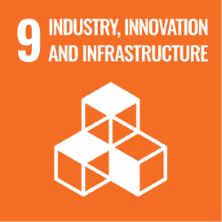

Alignment with Sustainable Development Goals (SDGs)
GreenFertix’s vision and operations contribute to multiple United Nations Sustainable Development Goals (SDGs):
SDG 2
Zero Hunger
By providing sustainable, locally produced green fertilizers, we enhance agricultural productivity and food security.
SDG 3
Good Health & Well-Being
Our future production of medical-grade oxygen addresses a critical healthcare challenge in Ethiopia, ensuring hospitals and healthcare facilities have a reliable supply for patient care.
SDG 7
Affordable & Clean Energy
Our green hydrogen projects promote clean energy adoption, reducing dependency on fossil fuels.
SDG 9
Industry, Innovation & Infrastructure
We support industrial decarbonization through green hydrogen and its derivatives, fostering sustainable economic growth.
SDG 13
Climate Action
By replacing fossil-fuel-based fertilizers with green urea, we contribute to significant reductions in CO₂ emissions and climate mitigation efforts.

At GreenFertix, we are not just building a business—we are shaping the future of Ethiopia’s green hydrogen economy while addressing critical challenges in agriculture, energy, and healthcare. Join us in driving sustainable industrial transformation.